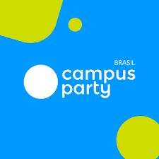

|  |
A Campus Party é o maior festival de tecnologia, empreendedorismo, ciência e disruptividade do mundo, com mais
de 70 edições realizadas em 30 países. |
Área OpenO espaço mais visitado da Campus Party, totalmente gratuito e com atividades para toda a família. Lá você vai encontrar uma variedade de temas que compõem a Campus Party, entre experiências, exposições e atividades. É na Área Open que despertamos o interesse pela tecnologia, ciência e disruptividade nos novos campuseiros de todas as idades. ArenaNosso Hub de comunidades, lotado de conteúdos transformadores entre palestras, workshops, hackathons, e desafios diversos. O lugar perfeito para seu aperfeiçoamento profissional, descobrimento de interesses e busca de novas conexões. CampingO coração da Campus, um espaço de convivência onde os membros da nossa comunidade podem ficar acampados durante o evento, vivendo essa experiência em tempo integral e aproveitando tudo que a Campus Party tem a oferecer. IncludeO Include by Campus Party viabiliza o acesso a tecnologia para transformar histórias. O programa social oferece qualificação a jovens de 12 a 20 anos, tornando-os protagonistas de suas próprias vidas e reparando-os para o mercado de trabalho. Atualmente o programa conta com 62 laboratórios em 53 cidades situadas em 10 estados brasileiros, rumo ao objetivo de construir 10 mil laboratórios Include pelo Brasil. |